Introduction - PANELS AND FRAME
- Path
- Descriptions > 72 PANELS AND FRAME > Introduction - PANELS AND FRAME
- Kind
- system description
- Applies to
- all engines; all production periods
- Interactive page
- https://sloeber94.github.io/elrnDB-a156/en/#/3239247
Applies to: all engines; all production periods
SPECIFICATIONS:
INTRODUCTION
Aerodynamics
The style of the new car, featuring smooth lines which are modern yet, at the same time, recall styles of the past, contains all of the sporting tradition of Alfa Romeo plus the quality of a large saloon. - The aims of adaptability, comfort, functionality and strength already achieved on previous models have all been consolidated.
The front section, the sides with flush windows and joined surfaces, the rear section and underbody have been designed with particular attention to the aerodynamics aspect which, together with the typical lines of the make, permits an excellent aerodynamic coefficient (CX = 0.315) and aerodynamic coefficient per area (CX x S = 0.639). These values are the result of measurements made in the Fiat wind tunnel.
SAFETY
The main aim of car manufacturers is undoubtedly the complete safety of the driver and passengers.
The regulations on both the European and the world market have become very demanding in this respect, and to meet this requirement, the new Alfa Romeo car has been designed in order to respond in the best possible way to all situations.
Preventative safety
This involves all those factors which determine comfort and allow situations which could distract the attention of the driver to be prevented:
- extremely rigid bodyshell;
- optimum engine mountings;
- climate balanced throughout the interior compartment, with anti-pollen filter and diffusers which permit an excellent air exchange and better transpiration and thermal comfort;
- controls and warning lights illuminated, so immediately legible;
- addition of the third stop light in advance of the regulations (1 September '98).
Active safety
This involves all the features which contribute actively to driving safety:
- dual crossover independent circuit braking system with ABS, fitted as standard on all models, with electronic distribution of the braking force (EDB) with active sensors which reduce the actuation times;
- 'high quadrilateral' front suspension, similar to those used in racing, ensure a high degree of control with both sporty and normal driving style. The advantages of this suspension are felt in: the driving precision and controlability of the vehicle, even in the wet and in poor grip conditions, an immediate and precise response and a capacity to absorb obstacles and uneven road conditions;
- McPherson rear suspension with new geometry with a self-aligning effect, which enables the vehicle to be stabilized during steering, facilitating control even in extreme manoeuvres, and optimizes roll and pitching reactions;
- steering and power steering designed to allow a precise, immediate response in all situations.
Passive safety
The structure of the Alfa 156 is designed to crumple in controlled fashion in the case of impact from the front, side or rear and to absorb impact energy without affecting passenger compartment living space.
Main features of the passive safety system
On both the basic version with driver's Air Bag, fitted as standard on all versions, and on the version with driver's and passenger's Air Bag, the car car has been successfully tested in accordance with the following methods:
- offset frontal impacts, test (AMUS/ADAC and ECE R94) and at high speed (USA 208), the front crumple zone and the strengthened passenger compartment cell with reinforcements at key points, ensure excellent performance;
- dynamic side impacts, the structure of the side panel, centre pillar and reinforced door panels ensure conformity to future retgulations (ECE R95);
- Roll-Over (standard (USA 216), the structure of the roof and high resistance pillars ensure the survival cell;
- prevention of the intrusion of the load transported in the luggage compartment: ensured by the partition behind the backrest and the links to the bodyshell;
- resistance to rear impacts, standard (ECE 32/34 - ECE 17/04), ensured by the reinforced structure and the new rear side members;
- impacts at low speed (4 - 15 kph), special design features have made it possible to minimize damage;
- front and rear bumpers which pass the test mentioned in the standard (ECE 42) without damage.
Fire safety
This is achieved through the FPS (Fire Prevention System) which consists of:
- internal fire extinguishers which restrict the propagation speed of the flames (standard USA 302);
- inertia switch for cutting off the fuel pump;
- a reflux valve and antimisfiring shields (overheating of the catalyzer on petrol versions);
- a system protecting the cables through which high intensity currents flow;
- no fuel leaks and retention of the battery in the case of an impact or overturning, standard (ECE 34);
- fuel tank made from a plastic material which has high mechanical and fire resistant properties, located in front of the rear axle and firmly secured to the bodyshell via three bands;
- steel tubes in the spark out area.
Torsional and flexural rigidity
The high flexural and torsional rigidity of the Alfa 156 body, in addition to ensuring high passive strength, transmits a sensation of solidity and comfort in general, maintaining correct suspension angles and offering absolute driving precision. In effect if the bodyshell, with windscreen and rear window and without moving parts, is subjected to a torsional force (A) of 1780 kgm, it only yields by one degree.
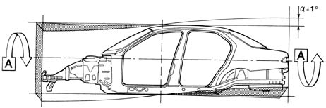
If instead a bending force (B) of 564 kg is applied, the bodyshell bends by only 1 mm.
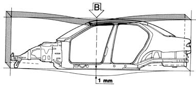
These impressive strength figures lead to many advantages:
- lower vibrations;
- lower noise;
- improved driveability;
- – increased resistance to failure caused by the use of the vehicle over particularly uneven roads;
- – the sensation of a compact car;
- – improved maintenance in time of the overall qualities of the vehicle.
Resistance to frontal impacts
The differentiated strength bodyshell has strengthening reinforcements for the survival chamber to withstand the stringent front impact tests (A.M.U.S. USA 208) - (ADAC) and the future European standard (N.O. 1/10/98 ECE R 94).
The main bodyshell interventions to meet the above-mentioned standards are reinforcements under the floor, on the longitudinal member, the strut, pillars, gearlever mounting and door frame, adoption of bonnet retaining hooks and a high-strength dashboard crossmember made of magnesium alloy.
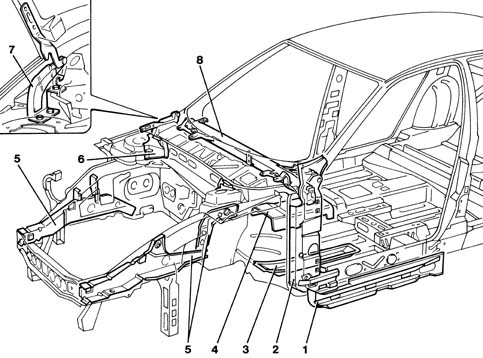
1 - Reinforcement on longitudinal member 2 - Reinforcement on pillars 3 - Reinforcement under floor 4 - Reinforcement on gearlever mounting 5 - Reinforcements on struts 6 - Reinforcements connecting suspension struts to bulkhead 7 - Bonnet retaining hooks 8 - Dashboard crossmember
Resistance to side impacts and roll-over
In the case of side impacts or roll-over, the bodyshell crumples in a controlled manner in such a way as not to compromise the survival cell, thus protecting the occupants.
The above has been obtained by reinforcing the central pillars in several places, along the entire length, at the seat belt anchor points, at the door lock striker areas, using a crumpling cross-element under the seat joining the central floor and front frame to optimize the distribution of forces, and a multi-layer central hoop connecting the central pillars on the sides under the high-strength roof.
A further essential element in the resistance to side impacts consists of the doors which are discussed in the paragraph which follows.
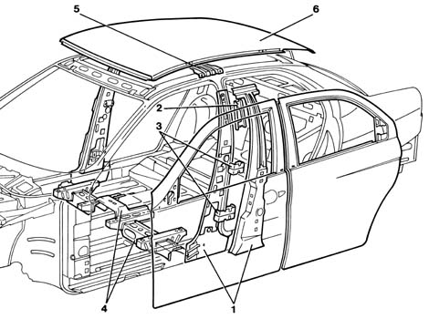
1 - Central pillar reinforcements 2 - Seat belt anchorage reinforcement 3 - Lock reinforcements 4 - Cross-element joining central floor and front frame 5 - Roof crossmember 6 - Roof
Structure of the doors
The structure of the doors is of fundamental importance for the safety of the passengers in the case of side impacts and has therefore been designed with optimum geometry and rigidity of the door panels to keep possible injury of the occupants to a minimum. The structure of the doors allows them to be opened after the most severe frontal impacts (AMUS) and rear impacts (ECE 32). This has been achieved by adopting anti-intrusion tubular bars, waist reinforcements and by inserting foam material between the panels.
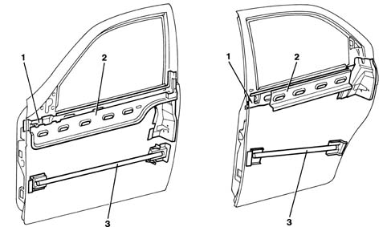
1 - Interior waist reinforcement 2 - Exterior waist reinforcement 3 - Tubular anti-intrusion bar
Structure of the roof
The particular structure of the roof, apart from outlining the profile of the car, gives greater rigidity to the unit, contributing to the safety of passengers in the case of both roll-over and side impact. In the structure, illustrated in the figure below, the hoop joining the central pillars of the side panels is secured by screws. In addition, to increase the solidity of the structure, structural adhesive is applied along the edges of the hoops in contact with the roof, which, apart from glueing the parts with high mechanical strength, acts as a sealant and prevents leaks between the box sections and the roof, thus preventing the occurrence of rust.
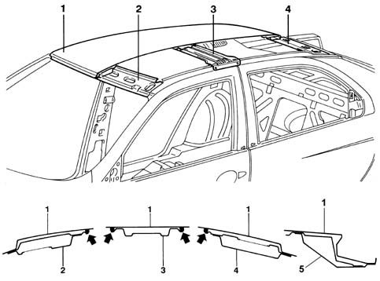
1 - Roof panel 2 - Front hoop 3 - Hoop connecting side pillars 4 - Rear hoop 5 - Hoop securing tailgate (Sport Wagon)
Resistance to rear impacts
The resistance to rear impacts exceeds the tests mentioned in the regulations (ECE 32/34, ECE 17/04) and is assured by the longitudinal members and the crossmembers, the rear box section coating, the crossmember under the rear window and the shelf under the parcel shelf, the bulkhead behind the squab, which also protects against the movement of the load transported in the luggage compartment at the time of the crash, and against the rear floor on which there is an anti cave-in crossmember which helps retain the rear seat occupants.
A further reinforced area is the door frame which allows the doors to be opened as mentioned in the regulations (ECE 32).
SALOON
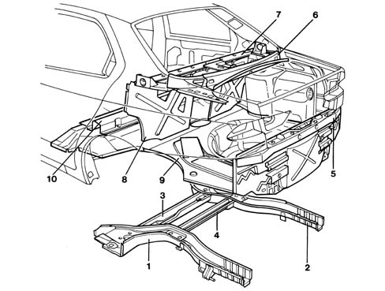
1 - Left rail 2 - Right rail 3 - Connection beam 4 - Connection beam 5 - Rear box section trim 6 - Crossmember under rear window 7 - Shelf under parcel shelf 8 - Bulkhead behind squab 9 - Rear floor 10 - Anti cave-in crossmember
SPORT WAGON
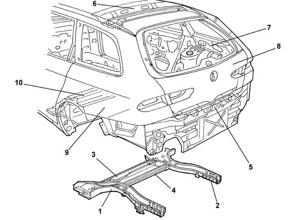
1 - Left rail 2 - Right rail 3 - Connection beam 4 - Connection beam 5 - Rear box section trim 6 - Rear roof crossmember 7 - Roof-side panel reinforcement 8 - Tailgate frame 9 - Rear floor 10 - Anti cave-in crossmember
Interior compartment and seats
To protect the occupants in the event of a crash, inside the interior compartment the dashboard has been designed with rounded profiles and made of a foamed crumple material, with particular attention to the area under the steering column to minimize possible injury to the driver's legs; in addition, to protect the upper body, apart from the Air Bag which is fitted as standard for the driver, there is also a high energy absorption magnesium steering wheel.
The furnishings are completed by covers in a high energy absorption material featuring rounded profiles and surfaces with seats which have been made extremely comfortable through the use of differentiated carrying capacity foams and upholstery padding to ensure optimum support for the various parts of the body. For the driver's seat, the combination of height adjustment and height and axial (depth) adjustment of the steering wheel, standard on all versions, allows the driver's place to be optimized for all drivers.
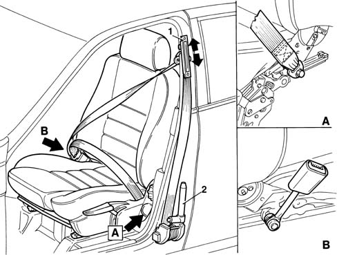
1 - Seat belt height adjuster 1 - Electronically-controlled pretensioner
Front seats
The following measures have been adopted to contribute to the safety of the driver and the passenger in the front seats:
- seat belts: height adjustable with a double mounting on the seat, with an electronically controlled pretensioner and high efficiency reel which keep the belt in the correct position irrespective of how the seat has been adjusted, where the outside seat belt mounting has been moved from the centre pillar to the seat (detail A) and the seat belt attachment to the seat, tunnel side (detail B) has been shortened to reduce the possibility of lengthening of the belt. This solution, in addition to the added benefit for the seat belt wearer, also improves the retaining of the occupant compared with traditional systems, with the belt mounting on the floor, allowing a considerable reduction (up to 30%) in acceleration and allowing the body to be kept in the correct position contributing to the anti-submarining effect;
- magnesium alloy structures, with reinforced squabs and cushion bottoms with anti-submaring effect profile, with high containment and high energy absorption properties;
- bilateral micrometric squab adjustment which permits better positioning of the squab and eliminates the possibility of 'falling backwards' in the case of adjustment during driving;
- height adjustment up to + 40 mm in relation to the standard position, which can be set by means of a ratchet lever with extremely small loads which is easy to use, sliding longitudinally on sloping guides so that the forward movement of the seat is also accompanied by the raising of the seat.
The squabs are also designed for a controlled structural yield, in the case of a rear impact of over 35 km/h, which allows the structure to tilt backwards, absorbing some of the energy without causing injury to the rear passengers.
Rear seats
The rear seats have a bulkhead behind the squab which protects the passengers from the movement of loads in the luggage compartment; the attachments to the bodyshell are also designed particularly to ensure the best possible retention of the occupants in the event of a crash. The anti-submarining function for the occupants is guaranteed by a crossmember above the floor.
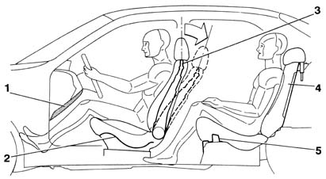
1 - Trim under steering column 2 - Anti-submarining cushion bottom 3 - Crumple front squab structure 4 - Bulkhead behind squab 5 - Rear anti-submarining crossmember
Windows
A further safety feature is provided by the fixed windows, the windscreen and the rearscreen which are bonded to the bodyshell, thus contributing to increasing the structural rigidity of the vehicle.
Windscreen
A stratified windscreen has been adopted to increase the safety of the vehicle. This solution means that if the windscreen is affected by stonechipping or is hit by an object and shatters, visibility is maintained and a high degree of protection is offered in the case of impact with the head.
The windscreen bonded flush with the bodywork, also contributes in greatly reducing noise from wind rustle.
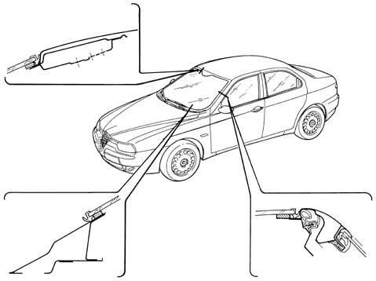
Rearscreen
The rear window, in non-laminated glass, is bonded flush with the bodywork, like the windscreen, making a particularly smooth body line which offers less wind resistance.
SALOON
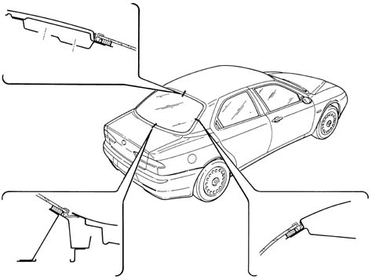
SPORT WAGON
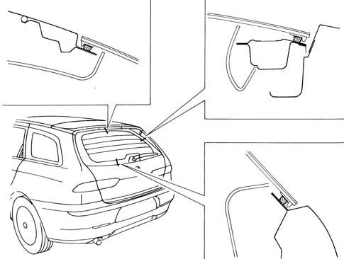
Fixed side window (sport wagon)
The fixed side window (third window) is glued flush with the bodywork.
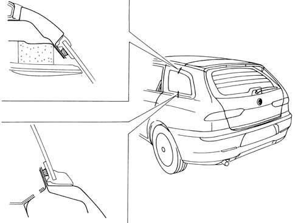
BODYSHELL PROTECTION
In accordance with domestic laws, the bodyshell of the Alfa 156 has been designed to be resistant for many years to any kind of environmental attacks as far as both the internal parts, which are not visible but potentially subject to corrosion, and the external parts, subject above all to damage which could adversely affect the appearance of the vehicle, are concerned.
These results have been achieved by designing the structure of the internal panels to minimize exposure to corrosive penetration, making widespread use of galvanized panels and using multiple protective treatments on all the inner and outer panel surfaces.
Galvanized panels
Galvanized panels can be produced through two different technological processes:
- deposition by galvanisation; the panel is immersed in or comes into contact with (according to whether both sides or only one side is involved in the process) a solution of zinc salts with a layer of pure zinc with a high degree of surface finish being deposited through the electrolytic effect;
- fire deposition of zinc; the molten zinc is deposited on the panel through a thermal effect; this process, which is used mainly for structural elements of the bodyshell, can produce zinc thicknesses of up to 20 micron to be used for the parts most exposed to corrosion, compared with the 8 micron normally used for the rest of the galvanized panels.
The layer of zinc provides a chemically active protection for the steel known as 'sacrificial' which, combined with the subsequent protection systems, guarantees excellent anti-corrosion properties over a period of time.
70% of the weight of the bodyshell is made from galvanized steel on the Alfa 156. Of this 70%, 75% is galvanized on both sides.
All the structurally important parts such as, for example, the mountings for the suspension and the reinforcements for the seat belts, are made from these materials.
As far as the external parts, subject to cosmetic corrosion, are concerned, the visible surfaces of the open moveable parts are 100% galvanized.
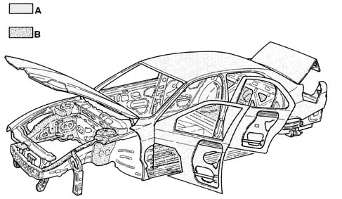
A - Double galvanised panels B - Single galvanised panels
Following the galvanizing treatment, the bodyshell is subjected to bonderization, a treatment which washes any grease or surface oxidation from the panels and to painting by cataphoresis, a treatment which is fundamental for the protection of the structural elements because the paint is deposited in areas of the bodyshell which would not otherwise be accessible. All the joins between the bodyshell panels are then sealed to prevent the penetration of corrosive agents.
Application of seals (saloon)
The diagrams below illustrate the most important points on the bodyshell where sealants are applied.
The different types of lines indicate the different types of sealant applied.
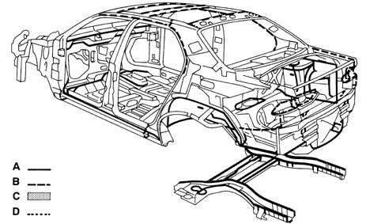
A - Hot-setting interior sealant B - Hot-setting exterior sealant C - High-consistency filler D - M 8740 sealant
.
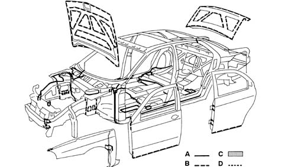
A - Hot-setting interior sealant B - Hot-setting exterior sealant C - High-consistency filler D - M 8740 sealant
Application of sealants (sport wagon)
The diagrams below illustrate the most important points on the bodyshell where sealants are applied.
The different types of lines indicate the different types of sealant applied.
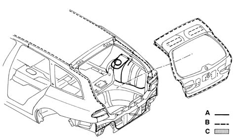
A - Hot-setting interior sealant B - Hot-setting exterior sealant C - High-consistency filler
.
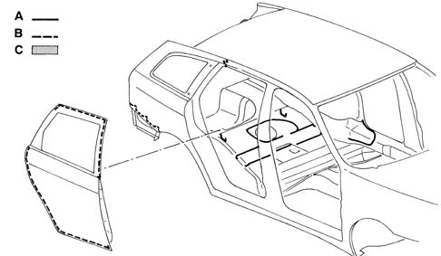
A - Hot-setting interior sealant B - Hot-setting exterior sealant C - High-consistency filler
Application of bodyshell anti-abrasion protection
The anti-abrasion protection is applied, immediately following the sealants; it is applied to all surfaces exposed to stonechipping. This protection, with strong elasticity and adhesive properties for the application surface, also makes a considerable contribution to noise damping.
Both materials, sealants and anti-abrasives, are then dried in the oven.
Protection with wax based oil
After the application of the anti-abrasives and the painting cycle, the anti-corrosion treatments are completed by the application of wax based oil in the box sections.
The interior surfaces of the box sections shown in the figure below are treated with wax-based oil sprayed at high pressure.
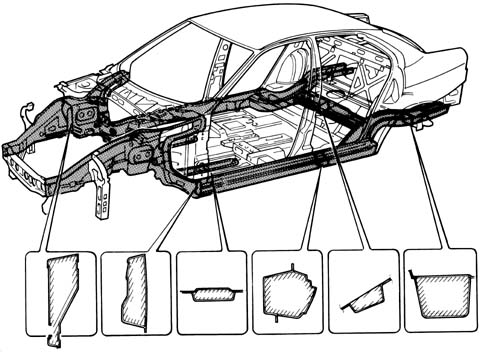
In the case of replacement of mechanical parts anchored to the underbody, in the areas shown in the figure below, renew the treatment with wax-based oil.
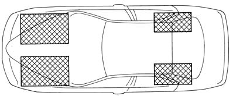
Painting
The Alfa 156 colour range comprises 5 pastel shades, 6 metallic shades and 1 pearl shade called 'Cloud Blue'.
The 'Pearl' colour is a reference point for the new style, and has been obtained after considerable development work by the Alfa Romeo laboratories and designers.
The name 'Cloud' has been adopted to emphasize the transparency and lightness of the tones. For this model, a 'Cloud Blue' tone has been presented, which is blue with a yellowish shimmer. The iridescent effect is obtained, not only by the composition of the paints, but also by a special process which involves:
- applying a white undercoat (it is not applied for metallic shades) which constitutes the base colour and influences the final nuance;
- manual spraying, with several cross coats of the pearl top coat: this operation is carried out with the body still, and requires the utmost accuracy to obtain perfect evenness;
- application of the transparent layer.
The pearly effect is due to the so-called physical phenomenon called refraction; when the light passes through the thin film of transparent metal oxides and the pearl-effect layer of pigments, consisting of a film of natural baked mica, some is reflected by the metal particles as from a mirror, and some continues through the paint. Thus the light is broken down into its component colours which are refracted with a very rainbow-like effect, which in the cloud colours is legible to the human eye as iridescence or shimmering, i.e. a colour which changes depending on the position of the observer and the lines of the car.
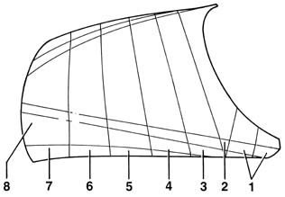
1 - Undercoat / cataphoresis 2 - Additional undercoat 3 - First manual application 4 - Second manual application 5 - Third manual application 6 - Fourth automatic application 7 - Fifth automatic application 8 - Transparent varnish
The type of colour for the vehicle and its characteristics are indicated on the identification plate which contains the following information:P
- paint product supplier;
- enamel colour and type;
- code;
- type of product to be used for touching up
- painting in the case of service interventions.
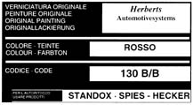
The table, in the chapter on product descriptions and specifications, gives the name, type and code of the colours used on this car.
SOUND INSULATION
In order to meet the EEC regulations the design of the Alfa 156 has produced exterior noise levels of below 74 decibels, whilst inside the passenger compartment, at an average speed of 100 km/h in fifth gear, a noise level equal to 68 decibels has been reached.
The improvement of driving comfort, in terms of quietness and liveability of the passenger compartment, has been achieved mainly by insulating the noise transmitted from the road surface, on the mechanics, on the assembly of the parts and on the aerodynamics.
All engine types fitted to the Alfa 156 belong to a new generation with high technological content designed also to improve the acoustic/vibrational aspects.
This same principle also applies to the power transmission components, the suspension and the mountings on the bodyshell.
The low aerodynamic noise level is also safeguarded by the shape of the vehicle and the care taken over the components which, with their inevitable profiles, often adversely affect acoustic comfort, such as door handles, external rear view mirrors, bumpers, various profiles.
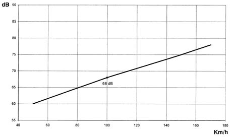
The following are the most effective measures taken to achieve an optimum level of sound insulation:
- insertion of preformed synthetic blocks (URL) in the longitudinal member box sections, to prevent transmission of vibrations to the car interior;
- special plugs have been inserted in the struts, the windscreen pillars and the rearscreen pillars; being made from a thermo-expandable material, they increase in volume during the bodyshell cataphoresis processes by around ten times thereby completely filling the box section;
- optimizing the bodyshell with the careful design of all components subject to noise, where the rigidity has been increased and the fixings have been reinforced. Very careful attention has also been given to choosing materials in contact;
- sound insulation linings for the panels with thermo-bonding materials applied before painting;
- sound-deadening linings for the front of the dashboard, the front and rear running boards, the wheel housings in the luggage compartment and the side panels in the luggage compartment with pre-formed, composite panels;
- an extremely thick sound-deadening lining for the roof panel which is glued to improve the sound insulation properties;
- the use in the openings for passing the cables between the engine and passenger compartments on both the panels and the sound insulation material of double rubber seals with a thickness of - 5 mm, to reduce the transmission of noise from the engine compartment to the passenger compartment;
- a thorough check of the sealants.
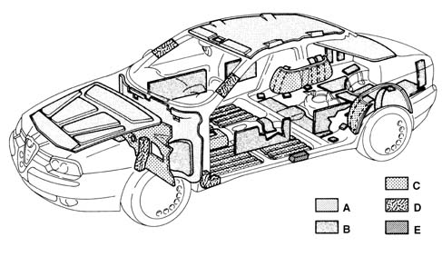
A - Sound-insulating materials B - Soundproofing materials C - Sound-deadening materials D - Heat expandible materials E - URL preformed blocks
RECYCLABILITY OF MATERIALS
Currently, when the vehicle reaches the 'end of its life' only the metal parts are recovered and reused to produce new steel and new aluminium castings.
All of the remaining part of the vehicle, which corresponds to about 25% in weight, is abandoned or eliminated.
An enormous amount of material and energy is therefore wasted in addition to contributing to increasing the size of the problem of disposing of solid waste.
The problem of recycling plastic materials can be solved from the design. During this stage it is necessary to evaluate the possibility of reusing the material in future components.
This model has been designed so that all the plastic and rubber components weighing more than 50 grams are marked with coded symbols which identify the material for recycling and therefore all the components can be recycled.
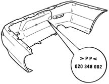
Recycling does not allow the same component to be produced as the starting one because the necessary properties of reliability cannot be guaranteed or it may not be suitable.
Insulating materials for building are obtained from seat upholstery.
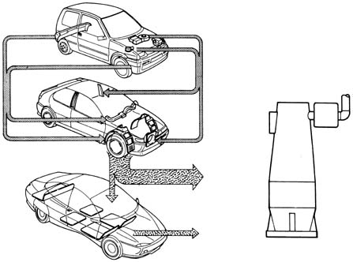
For other plastic materials, the recycling is carried out as follows: for example, the material for wheel arch liners which comes from the bumpers is then used in the next stage for producing sound insulation linings and finally ends up as fuel for the production of energy.
Recycling therefore involves three successive generations of vehicles, contributing to savings in raw materials.
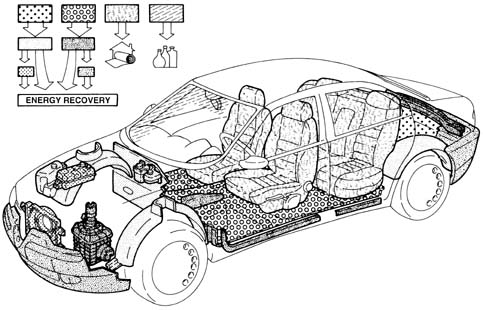
The tables, in the chapter on product Descriptions and Specifications, show the symbols and the names of the recyclable materials on the vehicle. This is because in service situations the suitable products are selected and used for internal washing, painting plastic materials, repairs, bonding, etc.
The aim is to avoid possible damage with product which are not compatible with one another.
In addition, marking makes it possible to select organic materials on the basis of their chemical composition.
It is also advisable, in a service situation, to separate materials on the basis of their composition in order to be able to send them off more easily for recycling.
IMPACT DIAGNOSIS
This chapter is designed to point out the most practical and correct ways to allow body repairers to obtain the best results.
Before starting to repair a vehicle, even one which is only slightly damaged, it is necessary to carry out a series of checks.
The first stage is to analyse the type of impact which has caused the damage and then the operations required to repair the vehicle.
The examination of the parts of the bodyshell structure which have been damaged, the possibility of repairing them or the need to replace them means that it is necessary to produce both an estimate of the repair costs and to decide the order of the repair operations in order to optimize the repair time.
A preliminary check involves a series of dimensional checks being carried out, not designed to measure specific distances, but to assess the deformation suffered by the bodyshell.
Jigs should be used for these checks on the diagonals for the engine and luggage compartments, passenger compartment, windscreen and rearscreen housings and door housings.
Jigs
The jigs consist of a graduated bar along which a cursor slides with a measuring push rod. In order to support the bar correctly, it is possible to fit at one end both a pushrod and a metal disc (the latter to rest on the connection radii of the car's compartments).
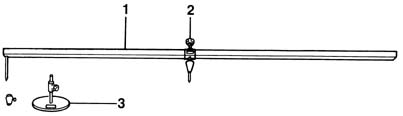
1 - Jig 2 - Cursor 3 - Supporting disc
Checking and restoring the bodyshell measurements
Checking the bodyshell measurements is the first operation which should be carried out in the sequence of repair operations.
The deformations suffered by the bodyshell as the result of a reasonably severe impact almost always cause alterations to the shape and the structure of the different parts of the bodyshell.
These alterations, if not corrected, are capable of seriously adversely affecting the safety of the vehicle, unpredictably altering the road holding and handling properties of the vehicle.
Measuring the dimensions may or may not require the dismantling of the vehicle mechanical asemblies, depending on the type of gauge used and the features of the jig.
Carrying out the check directly on the mechanical assembly mounting points (which requires their dismantling) guarantees greater precision.
It is, however, possible to carry out a preliminary check, using a gauge (control rod) at the points illustrated in the diagram which follows, with the assemblies fitted, but if there is non alignment, a more detailed check must be carried out, dismantling the mechanical units, an operation which is inevitable given that the bodyshell will have to be adjusted.
Start the check in a part of the vehicle which is not affected by the impact. For example, in the case of a car which has suffered a frontal impact, to check whether the structure has been deformed, check points C-E = B-F; if there is no difference in lengths at these points, move on to check points B-D = A-E.
It is possible, in this way, to establish a more exact fault diagnosis for the repair.
The operation is completed by the subsequent operation of restoring the distances using the hydraulic equipment which must ALWAYS precede the actual operations of repairing and/or replacing the damaged panels.
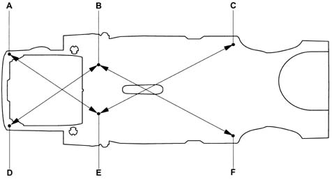
Typical bodyshell measurements
Each bodyshell has a series of typical measurements which exactly determine the position in space, in relation to a conventional reference system, using coordinates x,y,z, of particular points on the actual bodyshell, usually mounting points for the mechanical components and the suspension (see diagrams below).
The operation of checking the typical bodyshell measurements is carried out using special equipment, known as jigs, to which the bodyshell is secured, using suitable fixing elements, and checked using the gauges.
The jig consists of a solid, rectangular frame with a steel profile. This frame can, in turn, be fitted on various different equipment: four column or central piston lifts, various test benches or on wheels.
The dimensions to be measured on the gauges are not usually the same dimensions supplied by the Manufacturer of the vehicle, but they are adapted by the Manufacturer for the gauges and jigs to be used.
Each Manufacturer of jigs publishes and supplies a series of reference dimensions with the equipment which should be used for specific checking operations on each type of vehicle.
Key for reference points for checking underbody:
- A: Automatic screwing reference hole
- B: Engine attachments
- C: Attachment of dashboard crossmember and steering column
- D: Gearbox attachment
- E: Primary hole
- F: Shock absorber mounting attachment
- G: Radiator crossmember bottom attachment
- H: Suspension assembly reference holes
- I: Suspension crossmember front attachment
- L: Engine crossmember rear attachments
- M: Suspension track control arm attachment
- N: Fuel tank attachment
- O: Rear suspension crossmember attachment
- P: Holes for centring suspension on pallet
GENERAL VIEW
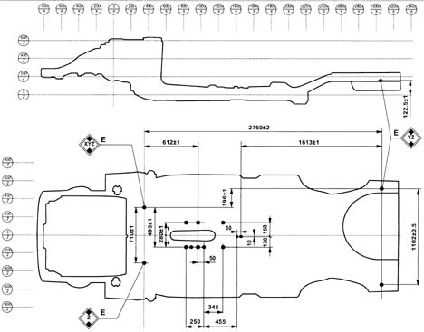
FRONT (PLAN VIEW)
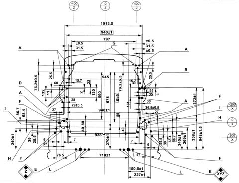
FRONT (SIDE VIEW)
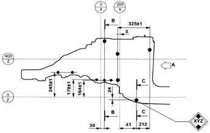
REAR (PLAN VIEW)
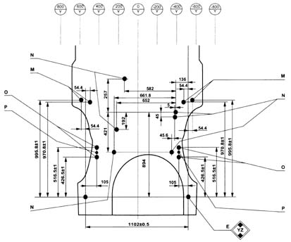
REAR (SIDE VIEW)
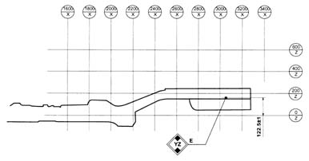
CAR INTERIOR FRONT BULKHEAD
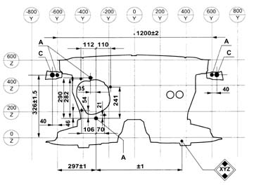
ADJUSTMENT OF MOVEABLE PARTS
Measurements for adjusting moveable parts
In order to facilitate and check the operations of dismantling the moveable parts, here is a list of the existing gaps (measurements expressed in millimetres) for appropriate adjustments; the method is described in the section containing the procedures for removing and refitting the moving parts.
FRONT AND SIDE VIEW (1)
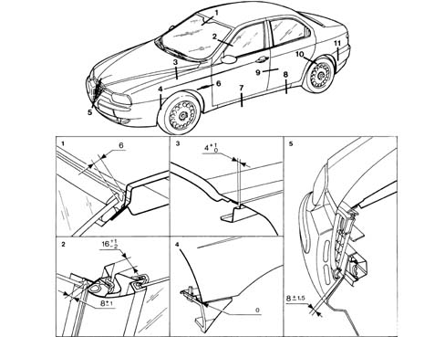
FRONT AND SIDE VIEW (2)
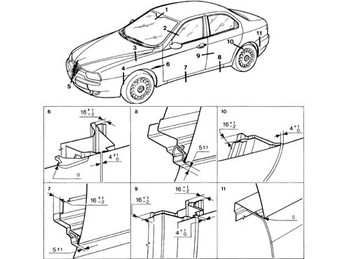
REAR VIEW (SALOON) (1)
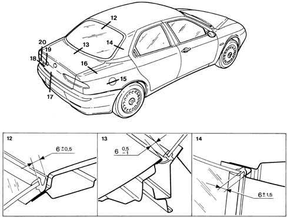
REAR VIEW (SALOON) (2)
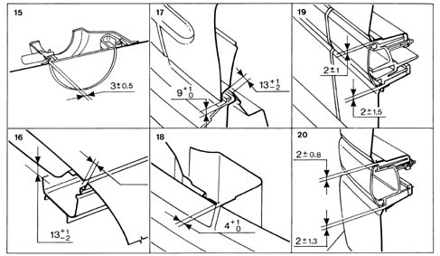
REAR VIEW (SPORT WAGON)
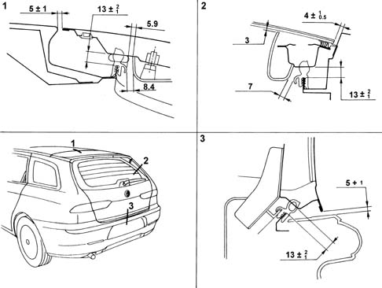